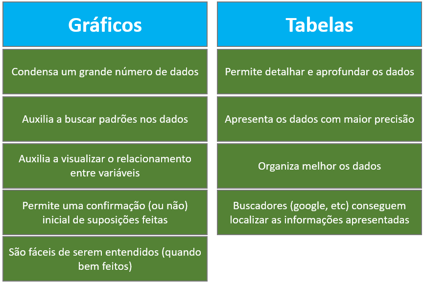
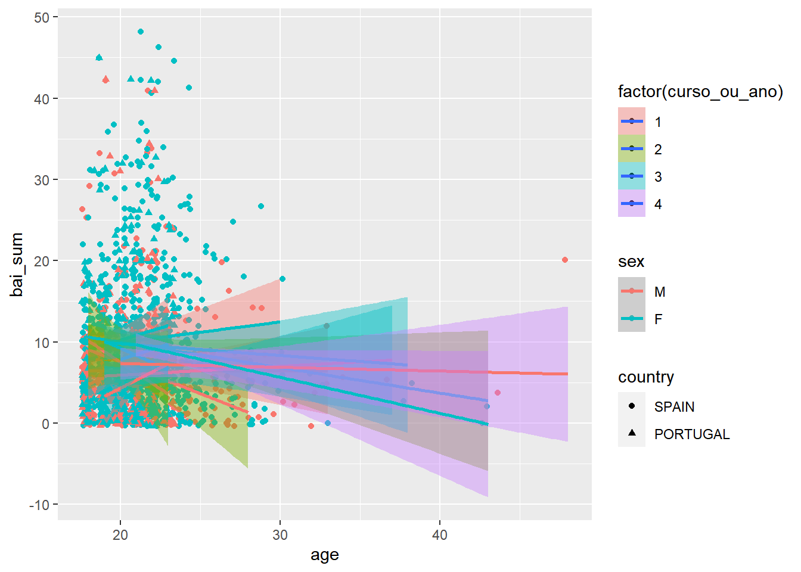

Cap. 4 Estatística Descritiva
Objetivos do capítulo
1. Introduzir conceitos importantes em estatística descritiva
2. Apresentar tabelas e gráficos
3. Apresentar funções do dplyr e ggplot
4. Apresentar um módulo específico do JASP
5. Sugerir heurísticas ou regras gerais na criação de gráficos
Quando pesquisadores e acadêmicos fazem seus estudos, com muita frequência, eles obtêm um grande conjunto de dados, sendo pouco informativo ou até mesmo inviável apresentar detalhadamente todos os resultados. A estatística descritiva oferece uma diversidade de ferramentas que auxiliam a descrever, resumir e apresentar os dados obtidos, de forma que os resultados sejam mais fáceis de serem compreendidos e analisados e, consequentemente, que a pesquisa possa ser melhor compreendida por todos os seus leitores.
Frequentemente, a massa completa de dados obtidos em uma pesquisa é resumida por alguns números específicos, que possuem certas propriedades estatísticas, e conseguem sintetizar adequadamente o volume de dados. Por sua vez, esses números são úteis em análises específicas que possam ser necessárias e serão descritos em outra seção deste capítulo.
Na apresentação dos dados, é possível utilizar informações textuais, tabelas e gráficos. Cada uma dessa formas traz consigo vantagens e desvantagens. Tabelas e textos permitem agrupar e detalhar os resultados e, com isso, torná-los mais precisos e extensivos. Entretanto, esse detalhamento pode também dificultar um pouco no entendimento geral e abrangente do estudo. Por sua vez, gráficos geram sumários descritivos, em que é possível ter um entendimento rápido dos principais resultados. Eles também podem incorporar elementos adicionais que auxiliem em uma primeira análise inferencial, tal como barras de erro e intervalos de confiança. Além disso, eles também permitem evidenciar as diferenças entre grupos ou as relações entre variáveis a depender da pesquisa feita. No entanto, tendo em vista que os gráficos condensam um grande conjunto de resultados em uma apresentação mais simples, eles também podem dificultar um pouco no entendimento geral das conclusões obtidas pela pesquisa.
O diagrama a seguir apresenta tais características:

É importante atentar que em todas estas técnicas, mas especialmente nas gráficas, deve-se evitar gerar distorções ao entendimento e interpretação dos resultados obtidos no estudo. Há casos de pessoas e profissionais que chegaram a sofrer sanções jurídicas pela distorção (intencional) de apresentação estatísticas. Neste sentido, há recomendações nacionais e internacionais que visam auxiliar no desenvolvimento de gráficos e tabelas e, com grande frequência, periódicos e editoras também requerem que formatos específicos na apresentação dos resultados sejam seguidos.
4.1 Tabelas
As tabelas são recursos estatísticos que permitem a apresentação de sumários informativos de uma pesquisa de maneira reunida e objetiva. É possível utilizá-las com apenas uma ou com múltiplas variáveis, sejam elas categóricas ou contínuas. Todas elas precisam de títulos e, eventualmente, algumas notas podem auxiliar na leitura da tabela.
As tabelas apresentam os resultados obtidos em locais específicos, separados por linhas e colunas. Resultados numéricos costumam ser arredondados em uma ou duas casas decimais e as colunas não costumam ter bordas. No entanto, o diagrama padronizado para desenvolvimento de tabelas costuma variar de editora para editora.
A tabela abaixo segue as recomendações da APA.

4.2 Gráficos
Gráficos são representações visuais utilizadas para exibir dados. Da mesma forma que tabelas, eles podem ser formados por uma ou múltiplas variáveis. Se bem feitos, os gráficos são extremamente úteis e auxiliam o rápido entendimento dos resultados obtidos em uma pesquisa.
Como aponta Morettin e Bussab (2010), gráficos possibilitam:
- buscar padrões e relações;
- confirmar (ou não) certas expectativas que se tinha sobre os dados;
- descobrir novos fenômenos;
- confirmar (ou não) suposições feitas sobre os procedimentos estatísticos usados; e
- apresentar resultados de modo mais rápido e fácil.
É sempre importante que o gráfico tenha um título e uma escala e, quando necessário, notas complementares.
A maioria dos gráficos são apresentados em um plano com um eixo horizontal (abcissas) e um vertical (ordenadas). Quando há apenas uma variável para apresentar, o eixo X irá reunir os níveis ou possíveis valores desta variável, enquanto o eixo Y irá apresentar suas contagens, proporções ou densidade. Quando há duas variáveis, o eixo X será utilizado para apresentar os níveis ou possíveis valores da variável independente, enquanto o Y apresentará os valores médios encontrados na variável dependente. Quando há mais de uma variável independente, um agrupador ou cluster deverá ser apresentado.
Com frequência, o eixo X recebe a variável independente com mais níveis, enquanto o agrupador recebe as outras.
Há diferentes heurísticas que auxiliam na escolha do melhor gráfico a ser desenvolvido para apresentar os resultados de uma pesquisa. De forma geral, quando é possível ter duas ou mais variáveis e a VD é continua, o desenvolvimento do gráfico vem atrelado a duas perguntas:
- Quantas variáveis serão apresentadas ?
- Qual o nível de medida da variável (ou variával independente quando há duas ou mais)?
Com isso, o diagrama abaixo oferece uma árvore de decisão funcional.
Nota: Nessa apresentação, pragmaticamente as variáveis categóricas são tratadas como discretas.
A apresentação de gráficos costuma seguir um desenvolvimento hierárquico. Inicialmente, gráficos univariados para variáveis categóricas e contínuas são criados. Em seguida, gráficos apresentando diferenças e relações entre grupos e variáveis são feitos. Na seção Pesquisa, diferentes gráficos serão gerados para ilustrar o processo.
4.3 Medidas de posição e dispersão
Uma vez que é pragamaticamente inviável apresentar detalhadamente todo o volume de dados obtidos em uma pesquisa, há um conjunto de números podem ser utilizados para resumir todo o conjunto. Eles costumam ser chamadados de números-síntese, medidas estatísticas ou apenas estatísticas e podem ser agrupados em medidas de posição e medidas de dispersão, que serão descritas a seguir.
Medidas de posição: valores que representam a concentração dos dados observados. Podem ser divididas em medidas de tendência central, medidas separatrizes ou de ordenamentos e medidas de posição relativa. As medidas de tendência central (MTC) indicam o valor em torno do qual uma grande proporção de outros valores está centralizada. As MTC mais usadas são a moda, a média e a mediana. As separatrizes são valores que indicam posições em uma distribuição ordenada acumulada dos dados. Frequentemente, a mediana e os quantis são utilizados e este último é formado pelos quartis (divisão dos dados em 4 partes iguais), decis (divisão em 10 partes iguais) e percentis (divisão em 100 partes iguais). As medidas de posição relativa são valores que indicam as posições que cada valor do conjunto de dados em relação a todos os dados. Frequentemente, o Escore Z, o Escore T e o Escore QI são utilizados como medidas de posição de relativa. A verdade é que essa divisão tão detalhada sempre apresenta inconsistências e quase nunca é utilizada na prática. No dia a dia, o termo MTC é utilizado de maneira virtualmente idêntica a medidas de posição.
Medidas de dispersão . Também chamadas de medidas de variabilidade ou afastamento. São Valores que indicam o quão dispersa se encontra a distribuição dos valores em relação à alguma medida de tendência central. Entre as medidas de dispersão, estão a amplitude, a amplitude (ou intervalo) interquartil, a variância, o desvio-padrão e o coeficiente de variação. Em Psicologia, o desvio-padrão e a amplitude interquartil (também chamado de intervalo interquartil) são as mais utilizada.
O diagrama abaixo apresenta estas informações.

É importante notar que esse conjunto de divisões tem pouco sentido prático na maioria das pesquisas e do cotidiano dos pesquisadores. Apenas em raras exceções, como em Psicometria, é que discussões sobre percentis e Escores Z serão feitas. Dessa maneira, apesar dessa apresentação representar um esforço para reunir as principais medidas estatísticas utilizadas, ela não traduz bem a realidade cotidiana da maior parte das pesquisas e, consequetemente, dos pesquisadores.
Com muita frequeência, as medidas de posição e as medidas de tendência central são vistas como sinônimos, bem como utiliza-se apenas o termo “medidas de dispersão” para todas as medidas de afastamento. Dessa forma, a organização apresentada no diagrama abaixo talvez possa ser mais útil.

As principais medidas serão agora apresentadas de uma maneira simples. Esse formato é proposital, uma vez que a proposta do livro é discutir tais conceitos pela apresentação de pesquisas específicas e previamente publicadas.
4.4 Média
A média é a MTC mais comum e mais intuitiva. Seu valor representa o “centro de gravidade” da distribuição, descrevendo a maior concentração dos valores em torno dela. Assim, ela resume o conjunto de dados e pode ser utilizada para substituir os outros valores, o que é especialmente útil quando há casos ausentes.
Imagine a seguinte situacão. 10 pacientes foram avaliados por um teste de inteligência e apresentaram os resultados abaixo descritos:
90.6, 102.8, 87.47, 123.9, 104.9, 87.69, 107.3, 111.1, 108.6, 95.42 and 122.7
A média indicará o valor central da distribuição em relação à distância entre os outros valores.
103.9
Repare que Caso uma tabela seja apresentada e nela seja calculado a distância de todos os valores em relação à média, os resultados seriam assim:
set.seed(1)
rnorm(11, mean = 100, sd = 15) %>% data.frame() %>% setNames(., c("Resultado")) %>%
mutate(media = mean(Resultado)) %>%
mutate(distancia = Resultado-media) %>%
pander()| Resultado | media | distancia |
|---|---|---|
| 90.6 | 103.9 | -13.26 |
| 102.8 | 103.9 | -1.11 |
| 87.47 | 103.9 | -16.4 |
| 123.9 | 103.9 | 20.06 |
| 104.9 | 103.9 | 1.078 |
| 87.69 | 103.9 | -16.17 |
| 107.3 | 103.9 | 3.447 |
| 111.1 | 103.9 | 7.211 |
| 108.6 | 103.9 | 4.772 |
| 95.42 | 103.9 | -8.445 |
| 122.7 | 103.9 | 18.81 |
Somando as distâncias, o resultado será 0, indicando que elas se anulam e que a média é o centro da distribuição.
set.seed(1)
rnorm(11, mean = 100, sd = 15) %>%
data.frame() %>% setNames(., c("Resultado")) %>%
mutate(media = mean(Resultado)) %>%
mutate(distancia = Resultado-media) %>%
mutate_if(is.numeric, round, 1) %>%
mutate(media = as.character(media)) %>%
janitor::adorn_totals() %>%
pander()| Resultado | media | distancia |
|---|---|---|
| 90.6 | 103.9 | -13.3 |
| 102.8 | 103.9 | -1.1 |
| 87.5 | 103.9 | -16.4 |
| 123.9 | 103.9 | 20.1 |
| 104.9 | 103.9 | 1.1 |
| 87.7 | 103.9 | -16.2 |
| 107.3 | 103.9 | 3.4 |
| 111.1 | 103.9 | 7.2 |
| 108.6 | 103.9 | 4.8 |
| 95.4 | 103.9 | -8.4 |
| 122.7 | 103.9 | 18.8 |
| Total | - | 3.109e-15 |
A tabela a seguir descreve algumas características vantajosas e possíveis limitações da média.
| Vantagem | Limitação |
|---|---|
| É intuitiva | Sensível |
| Algebricamente tratável | Não adequada a dados nominais |
| Estimador não viesado | |
| Sensível |
Nota: Uma medida sensível significa que ela é influenciada por todos os outros valores.
Exemplo de aplicações: Praticamente, em todas as pesqusias se utiliza a média para sumarizar os resultados obtidos. Como exemplos em Psicologia, a média de valores de inventários e testes psicológicos, a média do tempo de reação que um participante demora para responder à uma atividade específica e a média de consultas clínicas que em média um profissional realiza.
4.5 Mediana
A mediana é uma medida que representa o centro do conjunto de dados quando se considera a quantidade de elementos presentes. Uma vez que ela divide a distribuição em duas partes iguais com a mesma quantidade de elementos, ela pode tanto ser vista como uma medida de tendência central, como uma separatriz (5º decil e percentil 50). Comparada com a média, os resultados obtido pela mediana são mais robustos ou resistentes aos valores atípicos ou anômalos, apesar de menos intuitivos.
Para dividir a distribuição em duas partes iguais, a realização da mediana precisa de alguns procedimentos. Repare que abaixo estão os mesmo resultados apresentados na seção da média:
90.6, 102.8, 87.47, 123.9, 104.9, 87.69, 107.3, 111.1, 108.6, 95.42 and 122.7
Para o cálculo da mediana, é necessário organizar essa série de valores de maneira ascendente (chamado de rol) e localizar o resultado ao centro. Nesse caso, o valor ao centro é 104.9 . Note que este valor divide os dados em duas partes iguais de elementos abaixo ou acima dele.
87.47, 87.69, 90.6, 95.42, 102.8, 104.9, 107.3, 108.6, 111.1, 122.7 and 123.9
Caso a quantidade de elementos seja par, a mediana será a média artimética dos dois elementos centrais.
A tabela a seguir descreve algumas características vantajosas e possíveis limitações da mediana.
| Vantagem | Limitação |
|---|---|
| Resistente a valor anômalos/Outliers | Não representa todos os valores |
| Adequada para dados ordinais, intervalares e de razão | Não adequada a dados nominais |
| Adequada para dados ordinais, intervalares e de razão | Pouco adequada a tratamentos algébricos futuros |
Exemplo de aplicações: Situações em que a distribuição é muito assimétrica. Variáveis econômicas como salário e pobreza costumam trabalhar com a mediana dos dados.
4.6 Moda
A moda é a realização mais frequente de um conjunto de dados. Salvo algumas excessões, a moda não costuma ser utilizada em análises estatísticas, uma vez que representa mal o conjunto de dados.
Exemplo de aplicações: Situações em saúde pública, como a idade mais típica que uma menina tem o primeiro filho, dia e/ou horário modal de Admissão em um hospital. Situações economômicas de determinação de salários mínimos, eventualmente, também pode contar com resultados modais.
4.7 Amplitude
A amplitude é uma medida de dispersão que indica a variabilidade dos dados. O procedimento para seu cálculo é a subtração entre o maior e o menor valor de um conjunto de dados.
4.8 Amplitude interquartil
A amplitude interquartil também é chamada de intervalo interquartil. Essa medida apresenta a variabilidade dos dados de maneira insensível a valores extremos. Ela é computada pela subtração do primeiro quartil (Q1) pelo terceiro quartil (Q3), ou seja, Q3-Q1. Os quartis são medidas que indicam posições de separação no conjunto ordenado de dados.
O primeiro quartil indica o valor onde estão até 25% dos dados, o segundo quartil tem o mesmo valor da mediana e o terceiro quartil indica o valor onde estão até 75% dos dados.
Como a amplitude interquartil considera apenas a variabilidade em torno do centro, ela é uma medida considerada mais estável ou robusta quando comparada a outras.
4.9 Variância e Desvio-padrão
A variância e o desvio-padrão são duas medidas de dispersão frequentemente utilizadas em estatística, mas que apresentam algumas características diferentes.
A variância é uma medida que indica a variabilidade (quadrática) de um conjunto de dados, considerando todos os valores da distribuição. Pela sua estrutura matemática, seu resultado expressa o desvio quadrático médio e, com isso, seu valor não está na mesma unidade dos dados originais.
A variância é uma medida fundamental no estudo das famílias de distribuições de probabilidades e análises estatísticas. No entanto, na prática, ela é pouco usada para descrever a variabilidade dos dados e acaba sendo usada apenas de forma transitória para o cálculo do desvio-padrão.
O desvio-padrão, por sua vez, é uma medida com melhores características descritivas. Ele indica a variação dos valores em torno da média, e como seus resultados são calculados pela raiz quadrada da variância, o desvio-padrão está na mesma unidade dos dados originais. .
Em síntese, enquanto a variância tem maior importância em aspectos matemáticos relacionados às famílias de distribuições de probabilidade, o desvio-padrão tem melhor adequação descritiva de um conjunto de dados. Conceitualmente, as equações a seguir descrevem à variância amostral (à esquerda) e o desvio-padrão amostral (à direita):
\[\begin{equation} \begin{split} S^2 = \sqrt\frac{\sum\limits_{i=1}^N (X -\mu)^2}{N-1} \end{split} \qquad\qquad\qquad \begin{split} S = \frac{\sum\limits_{i=1}^N (X -\mu)^2}{N-1} \end{split} \end{equation}\]
Após estas apresentações teóricas, espera-se que seja possível apresentar a pesquisa a seguir, bem como implementar parte dos conceitos nos dados obtidos.
4.10 Pesquisa
Base: Base R - Pesquisa mapfre.RData
Neste capítulo, vamos utilizar a pesquisa intitulada “Depression and Anxiety Symptoms in a Representative Sample of Undergraduate Students in Spain, Portugal, and Brazil”. Nessa pesquisa, sou o coautor e o pesquisador responsável para correspondência. O objetivo deste estudo foi desenvolver um mapa epidemiológico de sintomas de ansiedade e depressão em universitários em três países, bem como investigar possíveis relações entre tais condições de saúde e fatores sociodemográficos. Para acessar eventuais transtornos depressivos, o Inventário Beck de Depressão (BDI) foi utilizado e para acessar condições de ansiedade, o Inventário Beck de Ansiedade (BAI) foi utilizado.
Um diferencial importante do trabalho foi a seleção amostral. Partiu-se de uma amostra estratificada (probabilística) dos estudantes de três universidades, PUC-Rio (Brasil), Universidade de Extremadura (Espanha) e Universidade de Coimbra (Portugal). Isso permitiu ter maior validade externa dos resultados.
4.11 Execução no R
Inicialmente, é necessário carregar a base de dados previamente descrita para o ambiente R. Este procedimento será necessário para todos os capítulos do livro. Frequentemente, Uma primeira tabela informativa começa por variáveis categóricas, que deve apresentar suas contagens e proporções. Nesta pesquisa de agora, tanto a variável countru como sex são categóricas e serão utilizadas.
como três países fizeram parte da pesquisa, os dados serão agrupados por eles. O desenvolvimento desta tabela pode ser feito com pacote janitor, tal como demonstrado a seguir.
| country | n | percent |
|---|---|---|
| SPAIN | 1216 | 0.6214 |
| PORTUGAL | 426 | 0.2177 |
| BRAZIL | 315 | 0.161 |
| Total | 1957 | 1 |
A adição de um um outro agrupador relacionado ao sexo é também importante. Note que existem casos ausentes nesta variável. Isso ocorre com bastante frequência e há diferentes estratégias para lidar com isso, que serão discutidas em momento oportuno. Para que valores ausentes não sejam apresentados, a função filter será implementada.
| sex | SPAIN | PORTUGAL | BRAZIL |
|---|---|---|---|
| M | 384 | 203 | 149 |
| F | 825 | 223 | 166 |
| Total | 1209 | 426 | 315 |
Para apresentar a quantidade de participantes totais, bem como a quantidade e a porcentagem de homens e mulheres por país, a codificação torna-se um pouco mais densa. A tabela a seguir reproduz parcialmente a tabela 1 do artigo publicado.
Dataset %>%
filter(!is.na(sex)) %>%
tabyl(country, sex) %>%
adorn_totals(c("row", "col")) %>%
adorn_percentages("row") %>%
adorn_pct_formatting(rounding = "half up", digits = 0) %>%
adorn_ns() %>%
pander()| country | M | F | Total |
|---|---|---|---|
| SPAIN | 32% (384) | 68% (825) | 100% (1209) |
| PORTUGAL | 48% (203) | 52% (223) | 100% (426) |
| BRAZIL | 47% (149) | 53% (166) | 100% (315) |
| Total | 38% (736) | 62% (1214) | 100% (1950) |
Enquanto as tabelas com variáveis categóricas apresentam contagens e suas respectivas porcentagens, tabelas para variáveis contínuas costumam utilizar medidas de posição e dispersão. A média e a mediana são os sumários mais utilizados para indicar a posição ou a concentração dos dados. Por sua vez, o desvio-padrão e a amplitude ou intervalo interquartil são utilizados para indicar o afastamento dos dados dessas medidas de posição. O R oferece muitos pacotes especializados em tabelas descritivas, cada qual com características positivas e limitadoras.
De maneira análoga à construção da primeira tabela deste capítuo, os valores do BDI e do BAI serão apresentados em função do país do participante.
Dataset %>%
group_by(country) %>%
summarise_at(vars(bdi_sum, bai_sum), lst(n=~n(),media=mean, DP=sd), na.rm=T) %>%
mutate_if(is.numeric, round,2) %>%
t() %>%
pander(., split.table = Inf)| country | SPAIN | PORTUGAL | BRAZIL |
| bdi_sum_n | 1216 | 426 | 315 |
| bai_sum_n | 1216 | 426 | 315 |
| bdi_sum_media | 8.86 | 9.05 | 10.89 |
| bai_sum_media | 8.55 | 7.92 | 9.01 |
| bdi_sum_DP | 7.54 | 7.73 | 8.29 |
| bai_sum_DP | 8.06 | 8.04 | 8.40 |
É também possível reunir tais resultados a partir do sexo do participante.
Dataset %>%
filter(!is.na(sex)) %>%
group_by(sex) %>%
summarise_at(vars(bdi_sum, bai_sum), lst(n=~n(),media=mean, DP=sd), na.rm=T) %>%
mutate_if(is.numeric, round,2) %>%
t() %>%
pander(., split.table = Inf)| sex | M | F |
| bdi_sum_n | 736 | 1214 |
| bai_sum_n | 736 | 1214 |
| bdi_sum_media | 8.68 | 9.59 |
| bai_sum_media | 6.81 | 9.47 |
| bdi_sum_DP | 7.74 | 7.73 |
| bai_sum_DP | 7.14 | 8.45 |
A apresentação agrupando pelo país e sexo do participante encontra-se abaixo:
Dataset %>%
filter(!is.na(sex)) %>%
group_by(country,sex) %>%
summarise_at(vars(bdi_sum, bai_sum), lst(n=~n(),media=mean, DP=sd), na.rm=T) %>%
mutate_if(is.numeric, round,2) %>%
t() %>%
pander(., split.table = Inf)## `mutate_if()` ignored the following grouping variables:
## Column `country`| country | SPAIN | SPAIN | PORTUGAL | PORTUGAL | BRAZIL | BRAZIL |
| sex | M | F | M | F | M | F |
| bdi_sum_n | 384 | 825 | 203 | 223 | 149 | 166 |
| bai_sum_n | 384 | 825 | 203 | 223 | 149 | 166 |
| bdi_sum_media | 8.40 | 9.11 | 8.60 | 9.46 | 9.50 | 12.16 |
| bai_sum_media | 6.58 | 9.42 | 6.16 | 9.50 | 8.29 | 9.66 |
| bdi_sum_DP | 7.54 | 7.54 | 8.05 | 7.42 | 7.81 | 8.53 |
| bai_sum_DP | 6.68 | 8.40 | 7.19 | 8.45 | 8.02 | 8.71 |
4.12 Gráficos
Tal como previamente exposto, os gráficos são excelentes recursos visuais para apresentação dos resultados obtidos em uma pesquisa. No R, a principal máquina gráfica é o ggplot. Para executar um gráfico, pelo menos 3 argumentos são necessários:
- O banco dados
(data = ),
- O aspecto estético, que permite diferentes complementos
aes(x = , y = , fill = , color = ),
- O aspecto geométrico, que varia em função do gráfico a ser apresentado
geom_
É também possível adicionar outros argumentos, como:
- Transformações estatísticas
stat_summary
- Facetas para dividir a visualização
facet_
- Sistema de coordenadas
coord_
- Temas específicos
theme_
É importante notar que apesar dos argumentos utilizados na sintaxe serem similares aos utilizados em toda família tidyverse, a ligação %>% é substituída pelo +.
4.13 1 variável discreta
Quando há apenas uma variável discreta (incluindo aqui as categóricas), os gráficos são criados para apresentar as contagens e/ou suas proporções. Nesse caso, é recomendado utilização de um gráfico de barras, colunas ou setor.
O gráfico de barras abaixo apresenta a contagem absoluta dos participantes pesquisados em cada país.
ggplot(Dataset, aes(x = country)) +
geom_bar() +
labs(x = "País", title = "Número de participantes nos países investigados")
Esse gráfico consegue auxiliar em um primeiro entendimento dos dados. No entanto, a simples contagem de valores pode gerar um entendimento diferente caso a pesquisa tenha muitos ou poucos sujeitos. Dessa forma, é apresentar as proporções em que cada valor ocorre costuma ser indicado. Por definição, quando se trabalha com proporções, o valor máximo da soma das proporções é 100.
A mudança da contagem para proporções pode ser feita por um recurso do pacote scales. Além disso, a adição dos valores textuais às colunas tende e auxiliar a visualização.
ggplot(Dataset, aes(x = country, y = ..prop.., group = 1)) +
geom_bar(stat = "count") +
geom_text(aes(label=scales::percent(round(..prop..,2)),
y=..prop..), stat= "count", color = "white", size = 3, position = position_stack(vjust = 0.5)) +
scale_y_continuous(labels = scales::percent_format()) +
labs(x = "País", title = "Proporção de participantes em cada país investigado")
O gráfico de setor (as vezes chamado de polar, pizza ou torta) também pode ser utilizado. O aspecto principal desse gráfico é apresentar o tamanho dos segmentos de maneira proporcional às frequências.
Dataset %>%
count(country) %>%
mutate(pct = n/sum(n)) %>%
ggplot(., aes(x="", y= pct, fill=country)) +
geom_col() +
geom_text(aes(label = scales::percent(round(pct,3))), position = position_stack(vjust = 0.5))+
coord_polar(theta = "y") +
labs(title = "Proporção de participantes em cada país")
4.14 1 variável contínua
Quando uma única variável deve ser apresentada e ela é continua, os melhor gráficos são o histograma, densidade (kernel) e o boxplot.
Abaixo um histograma da idade dos participantes:
ggplot(Dataset, aes(x = age)) +
geom_histogram(bins = 30, color = "black", fill = "lightgrey") +
labs(title = "Distribuição da idade dos participantes")## Warning: Removed 28 rows containing non-finite values (stat_bin).
Abaixo um gráfico de densidade da idade:
ggplot(Dataset, aes(x = age)) +
geom_density(fill = "lightgray") +
labs(title = "Distribuição da idade dos participantes")## Warning: Removed 28 rows containing non-finite values (stat_density).
Todas as distribuições de variáveis possuem uma localização, uma dispersão e um formato. De uma maneira mais direta, tanto o histograma como o gráfico de densidade conseguem apresentar bem o formato da distribuição. Nesse caso, trata-se de uma assimetria positiva ou à direita. Esse tipo de assimetria é reconhecido pela cauda arrastada à direita.
Por sua vez, abaixo o boxplot dessa mesma variável pode ser criado:
ggplot(Dataset, aes(y = age, x = "")) +
geom_boxplot() +
labs(title = "Distribuição da idade dos participantes")## Warning: Removed 28 rows containing non-finite values (stat_boxplot).
O boxplot apresenta vantagens em comparação com os outros gráficos apresentados até agora. Além de apresentar o formato da distribuição, ele também (1) apresenta no espaço da caixa a concetração em que 50% dos dados estão, (2) a mediana dos resultados, na linha interna e mais espessa da caixa, (3) os valores mínimos e máximos e (4) os eventuais outliers ou pontos anômalos.
Neste gráfico, a parte inferior da caixa é formada pelo valor do primeiro quartil (Q1), a linha mais espessa interna apresenta o segundo quartil (Q2) ou a mediana e a parte superior da caixa apresenta o valor do terceiro quartil (Q3). Os bigodes são frequentemente construídos com base em Q1 - 1.5*IQR e Q3 + 1.5*IQR e valores acima ou abaixo dele são entendidos como anômalos ou outliers. Por definição, os outliers são sempre poucos, mesmo que isso possa ser um pouco contraintuitivo nesta apresentação de agora.
O gráfico abaixo apresenta parte dos valores descritos.
ggplot(Dataset, aes(y = age, x = "")) +
geom_boxplot() +
stat_summary(
aes(label=sprintf("%1.1f", ..y..)),
geom="text",
fun = function(y) boxplot.stats(y)$stats,
position=position_nudge(x=0.5),
size=3.5)## Warning: Removed 28 rows containing non-finite values (stat_boxplot).## Warning: Removed 28 rows containing non-finite values (stat_summary).
Apesar de ser um pouco difícil de se visualizar ao início, a informação apresentada em um boxplot e no histograma ou gráfico densidade são virtualmente as mesmas, tal como demonstrado a seguir.
gridExtra::grid.arrange(
#Grafico 1
ggplot(Dataset, aes(x = age)) +
geom_density(fill = "lightgray") + labs(x="", y=""),
#Grafico 2
ggplot(Dataset, aes(y = age, x = "")) +
geom_boxplot() + labs(x = "") +
coord_flip(),
top = "Distribuição da idade dos participantes" #título
)## Warning: Removed 28 rows containing non-finite values (stat_density).## Warning: Removed 28 rows containing non-finite values (stat_boxplot).
4.15 2 variáveis com VI discreta (e VD contínua)
Gráficos de barras ou colunas e boxplots são adequados para apresentar essa relação. Basicamente, esses gráficos permitem verificar a diferença entre os grupos.
Como exemplo, o gráfico de colunas abaixo mostra os resultados médios do Inventário Beck de Ansiedade nos 3 países investigados.
## Warning: Removed 5 rows containing non-finite values (stat_summary).
Tal como exposto no início do capítulo, é possível adicionar outros elementos ao gráfico para que uma primeira apreensão inferencial seja possível. Nesse sentido, o gráfico abaixo apresenta também as barras de erro.
ggplot(Dataset, aes(x = country, y = bai_sum)) +
geom_bar(stat = "summary", fun = mean) +
stat_summary(geom = "errorbar",fun.data = mean_se, width = .5) ## Warning: Removed 5 rows containing non-finite values (stat_summary).
## Warning: Removed 5 rows containing non-finite values (stat_summary).
O boxplot a seguir também é um gráfico indicado. É importante notar que esse gráfico, a priori, não traz informações sobre a média, mas sim sobre a distribuição dos resultados. No entanto, como esse gráfico é bastante compreensivo, uma primeira noção inferencial já pode também ser feita.
## Warning: Removed 5 rows containing non-finite values (stat_boxplot).
4.16 2 variáveis com VI contínua (e VD contínua)
Quando tanto a VI como a VD são contínuas, o gráfico de pontos e de dispersão são indicados. Eles são virtualmente identicos e ajudam a verificar a associação entre as variáveis. No ggplot, o argumento geom_point (à esquerda) e geom_jitter (à direita) são possíveis.
gridExtra::grid.arrange(
#Grafico 1
ggplot(Dataset, aes(x = age, y = bai_sum)) +
geom_point(),
#Grafico 2
ggplot(Dataset, aes(x = age, y = bai_sum)) +
geom_jitter(),
nrow=1
)## Warning: Removed 33 rows containing missing values (geom_point).
## Warning: Removed 33 rows containing missing values (geom_point).
De maneira análoga aos elementos extras que podem ser apresentados em gráficos com VIs discretas, a reta de regressão amostral (FRA) costuma ser adicionadas em gráficos em que a VI é contínua para oferecer uma primeira apreensão inferencial. No capítulo sobre modelos de regressão, esse conceito será novamente revisitado. A seguir, segue um exemplo.
## `geom_smooth()` using formula 'y ~ x'## Warning: Removed 33 rows containing non-finite values (stat_smooth).## Warning: Removed 33 rows containing missing values (geom_point).
4.17 Outros gráficos e configurações
Os gráficos apresentados são quase sempre os principais para apresentar os resultados de uma pesquisa. Entrentanto, é possível construir gráficos com uma maior complexidade, que reunam diversas variáveis ao mesmo tempo. Evidentemente, a realização destes gráficos só tem sentido quando eles são relacionados ao problema de pesquisa estudado e não sobrecarreguem ou distorçam a visualização e entendimento dos resultados.
Frequentemente, essas informações adicionais são feitas pela inclusão de clusters ou agrupamentos. Isso é tanto possível em gráficos cuja VI seja discreta quanto contínua.
No exemplo abaixo, o gráfico dos resultados do Inventário Beck de Ansiedade entre os 3 países investigados (VI discreta) agora está agrupado pelo sexo do participante.
Dataset %>%
filter(!is.na(sex)) %>%
ggplot(., aes(x = country, y = bai_sum, fill = sex)) +
geom_bar(stat = "summary", position = "dodge") +
stat_summary(geom="errorbar", fun.data = mean_se, position = position_dodge(0.95), width = .5) ## Warning: Removed 5 rows containing non-finite values (stat_summary).## No summary function supplied, defaulting to `mean_se()`## Warning: Removed 5 rows containing non-finite values (stat_summary). Repare que este gráfico traz uma informação importante sobre os resultados de homens e mulheres nos três países. Além disso, as barras de erro ajudam em um primeiro entendimento de possíveis diferenças significativas. Esse conceito irá ser revisitado em capítulos subsequentes.
Repare que este gráfico traz uma informação importante sobre os resultados de homens e mulheres nos três países. Além disso, as barras de erro ajudam em um primeiro entendimento de possíveis diferenças significativas. Esse conceito irá ser revisitado em capítulos subsequentes.
Já no exemplo abaixo, a relação entre idade e pontuação no Inventário Beck de Ansiedade está agora agrupada pelo sexo do participante.
Dataset %>%
filter(!is.na(sex)) %>%
ggplot(., aes(x = age, y = bai_sum, color = sex)) +
geom_jitter() +
geom_smooth(method = "lm") ## `geom_smooth()` using formula 'y ~ x'## Warning: Removed 29 rows containing non-finite values (stat_smooth).## Warning: Removed 29 rows containing missing values (geom_point). Neste gráfico de agora, é possível perceber que os a relação entre a idade e os resultados do Inventário Beck de Ansiedade é muito pequena tanto para homens como para mulheres. Especialmente no capítulo de correlação, esse assunto será revisitado e parte dos termos utilizados aqui será alterado.
Por sua vez, situações em que há uma grande quantidade de variáveis apresentadas tendem a tornar os resultados difíceis de serem entendidos. O gráfico abaixo tenta traduzir essa condição, criando uma visualização de difícil entendimento justamente pelo excesso de variáveis presentes.
Dataset %>%
filter(!is.na(sex)) %>%
ggplot(., aes(x = age, y = bai_sum, color = sex, shape = country)) +
geom_jitter() +
geom_smooth(method = "lm") ## `geom_smooth()` using formula 'y ~ x'## Warning: Removed 29 rows containing non-finite values (stat_smooth).## Warning: Removed 29 rows containing missing values (geom_point).
Espera-se que seja possível constatar que este gráfico é totalmente inadequado, já que é carregado por informações, permite um baixo entendimento dos resultados da pesquisa e, eventualmente, pode gerar conclusões incorretas ou viesadas.
4.18 Execução no JASP
Da mesma forma que feito no R, será necessário carregar a {base}(https://osf.io/e639b/) para o JASP. Durante todos os capítulos, esse procedimento de importação será requisitado.
4.19 Tabelas
Após ter a base disposta no JASP, para gerar tabelas e gráficos, será necessário acessar a opção Descriptives. O JASP tratará todas as variáveis com um símbolo de diagrama de venn ou barras como categórias e todas as variáveis com símbolo de régua como contínuas.

Ao clicar nesta opção, será possível eleger as variáveis que irão ser analisadas e as variáveis que irão funcionar como agrupadores. Na prática, quando há duas ou mais variáveis para serem analisadas, a lista Variables irá reunir as variáveis dependentes, enquanto a variável independente será colocada na seção Split. É importante atentar à opção Frequency tables (nominal and ordinal), que deve ser marcada quando o nível de medida da variável de interesse for nominal ou ordinal.

Isto posto, vamos reproduzir parcialmente as mesmas análises feitas no ambiente R. Inicialmente, uma tabela descrevendo os participantes em cada um dos país é importante para apresentar ao leitor algumas das principais características da amostra. Para fazer isso, será necessário levar a variável country para a seção Variables e clicar em Frequency tables (nominal and ordinal).

Por padrão o JASP irá apresentar as contagens (frequências absolutas) e as proporções. A parte mais à esquerda da tabela descreverá os dados considerando todos os valores presentes na base. A parte mais à direita irá apresentar apenas os dados válidos, que não consideram casos ausentes. É importante antentar que o JASP não exclui estes casos, mas apenas não os mostra.
Para verificar a frequência e a proporção de homens e mulheres na amostra, será necessário colocar também a variável sex na opção Variables. Não é preciso retirar a variável country antes de fazer isso. O JASP irá apresentar ambas as tabelas de maneira empilhada.

Para fazer uma tabela agrupando tanto country, como sex, é necessário arrastar a variável que será apresentada nas linhas para o espaço Split. Em uma tabela em que se descreve a contagem e porcentagem de homens e mulheres em cada um dos três países de maneira independente, é necessário preencher o Split com a variável country. O JASP aceita que se arraste a variável de um local para o outro e, ao fazer isso, todas as contas serão automaticamente atualizadas.

É possível perceber que as variáveis categóricas são descritas por suas frequências e proporções. Por sua vez, variáveis contínuas costumam ser resumidas por medidas de posição e dispersão, tal como a média e o desvio-padrão. Como exemplo, para calcular tais medidas estatísticas dos valores do BDI e do BAI em função do país do participante, é necessário deixar a variável country em Split e levar as variáveis bdi_sum e bai_sum para Variables.

Dessa vez, não é necessário ativar a opção Frequency tables (nominal and ordinal). O símbolo de régua ao lado das variáveis bdi_sum e bai_sum indicadom de que elas são contínuas. O símbolo de diagrama de Venn ao lado de country, por sua vez, indica que ela é categórica.
Para fazer essas análises considerando sex como agrupador, será necessário substituir country por sex no espaço de Split.

Nesta versão do JASP, não é possível colocar duas variáveis como agrupadoras. Dessa maneira, a reprodução das tabelas feitas anteriormente no ambiente R é apenas parcial.
4.20 Gráficos
O JASP é um exelente programa para gerar gráficos. Tal como previamente apresentado, a criação de um gráfico apropriado dependerá tanto da quantidade de variáveis que devem ser apresentadas, como do nível de medida da VI, especialmente em análises bi ou multivariadas. O JASP pode fazer gráficos tanto seção Descriptives como em após análise de dados específicas. Na seção Descriptives, será necessário primeiro arrastar as variáveis de interesse para seus respectivos lugares e, em seguida, clicar na opção Plot.

4.21 1 variável discreta
Para este tipo de variável, gráfico de barras, colunas e setor são indicados. Para realizar um gráfico de barras, é necessário colocar a variável de interesse em Variables e, dentro de Plots, clicar em Distribuiton plots. O JASP organiza as barras de ordem crescente.

Para realizar um gráfico de setor, basta selecionar a opção Pie Charts. A visualização ocorrerá automaticamente. Uma vantagem deste gráfico é a apresentação proporção do elementos gráficos, em vez de contagens. Infelizmente, nesta versão do JASP, não é possível adicionar um rótulo com a porcentagem de cada cateogoria.

O JASP permite customizar as cores de alguns gráficos. Para fazer isso, basta clicar em Color Palette e escolher entre as opções disponíveis. Existem algumas possibilidade e recomendo optar por aquelas que permitem que pessoas com limitações visuais possam também se beneficiar. Entretanto, apenas como demonstração, o tema ggplot2 é apresentado abaixo.

4.22 1 variável contínua
Histogramas, gráficos de densidade e boxplots costumam ser indicados para variáveis contínuas. Para o JASP fazer tais gráficos, é necessário que o espaço Variables seja preenchido por alguma variável que tenha o símbolo da régua ao lado. A variável age é um bom exemplo. Ao colocá-la neste local e marcar a opção Distribution plots, um histograma será automaticamente apresentado.

É possível adicionar a densidade de maneira sobreposta ao histograma clicando em Display density.

Por sua vez, o boxplot pode ser criado ao clicar na opção Boxplots e, em seguida, Boxplot element.

Customizar o boxplot é possível, bem como adicionar outros gráficos que vem sendo mais utilizados recentemente, como o gráfico de violino. Isso não será demonstrado aqui, mas para fazer isso, basta ativar as opções desejadas na seção Customizable plots.
Tal como discutido anteriormente,o boxplot apresenta vantagens em comparação com os outros gráficos apresentados até agora. Além de apresentar o formato da distribuição, ele também (1) apresenta no espaço da caixa a concetração em que 50% dos dados estão, (2) a mediana dos resultados, na linha interna e mais espessa da caixa, (3) os valores mínimos e máximos e (4) os eventuais outliers ou pontos anômalos.
Neste gráfico, a parte inferior da caixa é formada pelo valor do primeiro quartil (Q1), a linha mais espessa interna apresenta o segundo quartil (Q2) ou a mediana e a parte superior da caixa apresenta o valor do terceiro quartil (Q3). Os bigodes são frequentemente construídos com base em Q1 - 1.5*IQR e Q3 + 1.5*IQR e valores acima ou abaixo dele são entendidos como anômalos ou outliers. Por definição, os outliers são sempre poucos, mesmo que isso possa ser um pouco contraintuitivo nesta apresentação de agora.
4.23 2 variáveis com VI discreta (e VD contínua)
Para situações em que há duas variáveis, a VI é tratada como discreta e a VD é contínua, gráficos de barras, colunas ou boxplots são indicados. Nesta versão do JASP, apenas o boxplot pode ser feito. Para verificar, por exemplo, a distribuição dos resultados do bai_sum em função do país, é necessário levar às variáveis a seus respectivos locais e, em seguida, o JASP permite realizar o boxplot.

4.24 2 variáveis com VI contínua (e VD contínua)
Quando há duas variáveis contínuas, tanto o gráfico de pontos como de dispersão são possíveis. Para fazer isso, é necessário incluir ambas as variáveis de interesse em Variables. Por exemplo, age e bai_sum.

É tanto possível marcar a opção Scatter Plots, como a opção Correlation Plots.

A escolha de cada opção é relacionada com os elementos que devem (ou não) serem incluídos neste gráfico. Na opção Scatter Plot, o gráfico irá exibir os pontos dos respectivos pares ordenados das variáveis x e y, suas densidade e também adicionar uma reta de regressão. Este último conceito será revisitado no capítulo de regressão. Um aspecto visualmente importante é a eleição de qual variável irá em x. Com bastante frequência, deve-se inserir a VI (mesmo que teórica) em x, enquanto a VD em y. Isso é feito alterando a ordem das variáveis em Variables.

4.25 Outros gráficos e configurações
O JASP é bastante versátil na realização de gráficos e permite que mais variáveis sejam inseridas. Há também um módulo (Module) chamado Visual Modeling, que permite uma grande customização de gráficos. Para acessá-lo, é necessário clicar na cruz azul, tal como destacado abaixo no quadrado roxo.

Na lista de opções, é necessário ativar Visual Modeling. Ao fazer isso, o icone será ativado na barra de ferramentas.

Com isso feito, dentro de Visual Modeling, a opção Flexplot adiciona uma melhora substancial aos gráficos que o JASP executa. Agora é possível, por exemplo, fazer um gráfico incluindo um cluster ou agrupamento, em que os resultados do Inventário Beck de Ansiedade são apresentados tanto em função dos países investigados, como do sexo do participante.

Uma série de outras opções e combinações podem ser feitas ao clicar em Options e Plot Labels. Elas não serão apresentadas nesta seção.
4.26 Resumo
Este capítulo apresentou os aspectos tabulares e gráficos corriqueiramente encontrados em pesquisas de Psicologia e áreas congêneres. Entre os pontos principais, estão os seguintes:
- Medidas de posição e dispersão são fundamentais na apresentação dos resultados de uma pesquisa
- A média e o desvio-padrão são, respectivamente, as medidas de posição e dispersão mais utilizadas
- Tabelas e gráficos visam informar o leitor, sem criar viés ou distorção dos resultados
- As tabelas são muito úteis para uma apresentação mais detalhada dos resultados
- Gráficos condensam um grande volume de dados de uma forma mais facilmente interpretável
- A heurística típica em gráficos solicita responder a quantidade e a natureza das variáveis a serem apresenadas
4.27 Pesquisas adicionais
References
Morettin, P. A., & Bussab, W. de O. (2010). Estatistica basica. Saraiva.